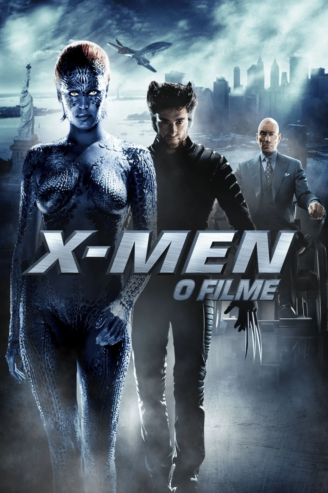
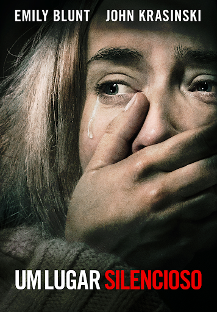

1. X-men O Filme
Em X-Men: O Filme (2000), mutantes são temidos pela sociedade, levando a um conflito entre duas visões opostas: a do Professor Xavier, que lidera os X-Men e busca a coexistência pacífica, e a de Magneto, que acredita na supremacia mutante. A história acompanha Vampira, uma jovem que descobre seu perigoso poder de absorção, e Wolverine, um mutante solitário com garras de adamantium e fator de cura. Após serem atacados pela Irmandade de Magneto, são resgatados pelos X-Men e levados à Escola para Jovens Superdotados. Magneto planeja usar Vampira em uma máquina para transformar líderes mundiais em mutantes, mas os X-Men intervêm, impedindo seu plano. Na batalha final, Wolverine salva Vampira e Magneto é capturado, mas a rivalidade entre as duas facções continua.
Saiba mais2. Um Lugar Silencioso
Em Um Lugar Silencioso (2018), um mundo pós-apocalíptico é dominado por criaturas cegas com audição extremamente sensível, que caçam qualquer som. A história acompanha a família Abbott, formada por Lee (John Krasinski), sua esposa Evelyn (Emily Blunt) e seus filhos, que vivem em silêncio absoluto para sobreviver. Após a perda trágica de um dos filhos, eles se esforçam para se adaptar, especialmente Regan, a filha surda que se sente culpada pela tragédia. Quando Evelyn fica grávida, o desafio de manter o silêncio se torna ainda maior. No clímax, a família descobre que a deficiência auditiva de Regan é a chave para derrotar as criaturas, usando a frequência de seu aparelho auditivo para enfraquecê-las e finalmente lutar de volta.
Saiba mais3. Verdade ou Desafio
Em Verdade ou Desafio (2018), um grupo de amigos participa de um inofensivo jogo de "Verdade ou Desafio" durante uma viagem ao México, mas descobre que o jogo foi amaldiçoado e agora forças sobrenaturais os forçam a continuar jogando. Quem se recusa a participar ou mente é punido com a morte de forma brutal. A protagonista Olivia (Lucy Hale) e seus amigos tentam quebrar a maldição enquanto enfrentam desafios cada vez mais perigosos. Conforme descobrem a origem do jogo, percebem que a única maneira de sobreviver pode ser espalhar a maldição para outras pessoas, levando a um dilema moral e um final perturbador.
Saiba mais